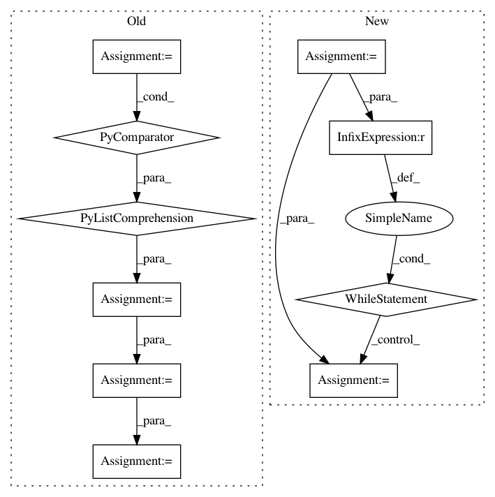

ec9066e5b2bdadc4f1aa1dfd075303dbc3155705,server/website/website/views.py,,give_result,#Any#Any#,1132
Before Change
return HttpResponse("Invalid upload code: " + upload_code, status=400)
latest_result = Result.objects.filter(session=session).latest("creation_time")
task_ids = [t for t in (latest_result.task_ids or "").split(",") if t.strip() != ""]
tasks = TaskUtil.get_tasks(task_ids)
overall_status, num_completed = TaskUtil.get_task_status(tasks, len(task_ids))
next_config = latest_result.next_configuration
LOG.debug("result_id: %s, overall_status: %s, tasks_completed: %s/%s, "
"next_config: %s\n", latest_result.pk, overall_status, num_completed,
After Change
task_res = celery.result.result_from_tuple(task_tuple)
task_list = []
task = task_res
while task is not None:
task_list.append(task)
task = task.parent
group_res = celery.result.GroupResult(task_res.task_id, results=task_list)
next_config = latest_result.next_configuration
LOG.debug("result_id: %s, succeeded: %s, failed: %s, ready: %s, tasks_completed: %s/%s, "
In pattern: SUPERPATTERN
Frequency: 3
Non-data size: 10
Instances
Project Name: cmu-db/ottertune
Commit Name: ec9066e5b2bdadc4f1aa1dfd075303dbc3155705
Time: 2020-02-08
Author: dvanaken@cs.cmu.edu
File Name: server/website/website/views.py
Class Name:
Method Name: give_result
Project Name: snipsco/snips-nlu
Commit Name: aae0ba842e293a63d6aaee45553712532054ef79
Time: 2017-04-12
Author: clement.doumouro@snips.ai
File Name: snips_nlu/slot_filler/data_augmentation.py
Class Name:
Method Name: get_noise_iterator
Project Name: aleju/imgaug
Commit Name: 2a1bd4c93a998d16516d82893401b346d66a95e9
Time: 2019-07-19
Author: kontakt@ajung.name
File Name: imgaug/dtypes.py
Class Name:
Method Name: get_minimal_dtype